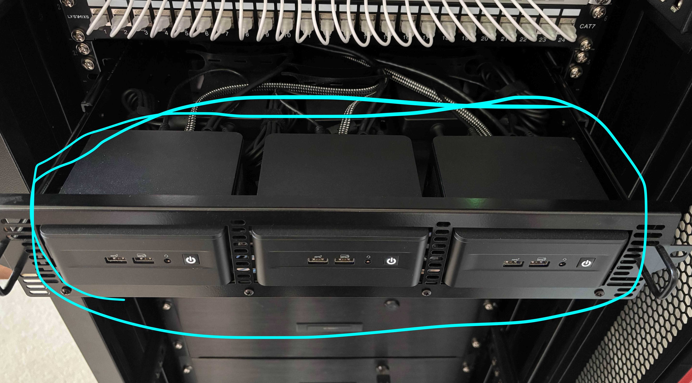
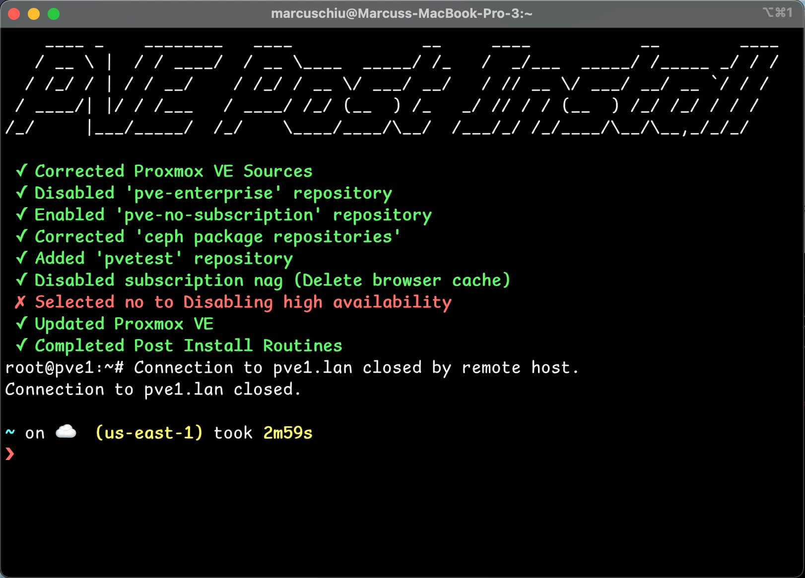

Homelab #2 - Proxmox Cluster
Homelab Series:
- Homelab #1 - Humble Beginnings
- Homelab #2 - Proxmox Cluster
- Homelab #3 - Kubernetes Cluster (Initial Setup)
- Homelab #4 - Kubernetes Cluster (Infrastructure Setup)
- Homelab #5 - Kubernetes Cluster (App Bonanza!!!!!!)
Proxmox Cluster
In this post I will go over setting up a Proxmox Cluster on my 3 Intel NUCs in my homelab rack.
This will allow my servers to run in high availability just in case one NUC goes down.

Download Proxmox ISO and Create USB Boot Device
Download and install: https://www.proxmox.com/en/downloads/proxmox-virtual-environment
I’ve downloaded the ISO file and used BalenaEtcher to create the USB boot medium.
Post Installation Script
Once Proxmox was installed on each of the three machines, we will run one of the post install scripts.
This script removes the subscription nag, and among other things.
Since we are configuring a cluster - we will not disable High Availability.
bash -c "$(curl -fsSL https://raw.githubusercontent.com/community-scripts/ProxmoxVE/main/tools/pve/post-pve-install.sh)"

Configure Proxmox Cluster
After post installation setup, we will follow this video in configuring a Proxmox cluster